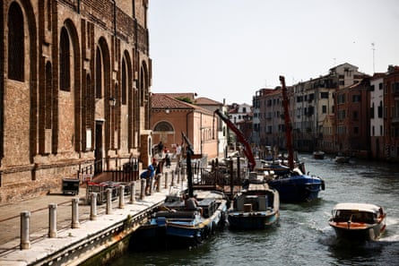
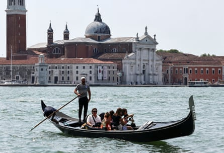
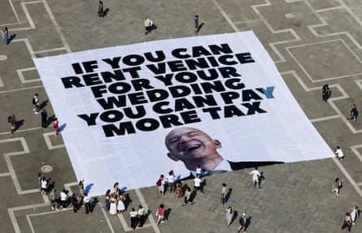

Campaigners in Venice have claimed victory after Jeff Bezos was reportedly forced to change the venue for his wedding celebrations in the city as his guests started arriving on Tuesday for the three-day jamboree.
The main reception for the wedding of Bezos and Lauren Sánchez , a former TV journalist, was due to be held in the Scuola Grande della Misericordia, a majestic 16th-century building in the city centre.
But according to the No Space for Bezos group, the couple relented after activists threatened to fill the canals with inflatable crocodiles to block their celebrity guests from entering.
The Scuola Grande della Misericordia,a 16th-century building in the centre of Venice.Photograph: Yara Nardi/Reuters
The event will instead take place in Arsenale, a historic complex of shipyards surrounded by fortified walls that will be much harder for the protesters to penetrate.
According to local press reports, the venue switch was also due to security concerns after the US joined the war between Israel and Iran, especially because Donald Trump’s daughter, Ivanka, arrived in Venice on Tuesday.
The authorities in Venice have upped security across the city, particularly in the Jewish neighbourhood.
The 200 or so wedding guests, who may also include Elon Musk, Kim Kardashian and Leonardo DiCaprio, will arrive in Venice on Tuesday and Wednesday. An estimated 95 private planes are reported to be landing at the city’s airport.
No precise dates or details have been confirmed, although it is believed the celebrations will begin on Thursday, with the couple exchanging vows on Friday in San Giorgio Maggiore basilica on the Venetian island of the same name. The big party is expected to be held on Saturday.
Activists said that instead of trying to stop the wedding, they will organise a “no Bezos, no war” march.
“We feel as if we scored a victory,” said one activist, who asked not to be named. “The crocodile initiative would have given a bad impression of the city – this is why the venue was changed even if the authorities might try to claim it was because of the war.”
San Giorgio Maggiore, where Bezos and Sánchez are expected to exchange vows on Friday.Photograph: Yara Nardi/Reuters
The campaign group emerged soon after Venice’s millionaire mayor, Luigi Brugnaro, confirmed in March that the couple would be getting married in the city . Protesters say the event risks turning the world heritage site, which has long suffered from the effects of excessive tourism, into a playground for the rich.
Posters featuring an image of Bezos’s head on a rocket blasting into space – in reference to his Blue Origin space tourism venture – have appeared across the city.
Greenpeace Italia and the British activist group Everyone Hates Elon have also joined the protests, unfurling a huge banner in St Mark’s Square on Monday with a picture of Bezos laughing and a sign reading: “If you can rent Venice for your wedding you can pay more tax.”
Greenpeace said the initiative was aimed at highlighting the “social and climate injustice” of such events.
A banner in St Mark’s Square unfurled by Greenpeace Italia and Everyone Hates Elon.Photograph: Yara Nardi/Reuters
“Bezos embodies an economic and social model that is leading us towards collapse,” Greenpeace said, arguing that lifestyles fuelled by “the arrogance of a few billionaires” are devastating for the planet.
Brugnaro said he was ashamed of those who protest against people who “bring riches” to the city.
Eyeing an opportunity amid the controversy, Matteo Pressi, the mayor of Soàve, a walled village in Veneto with a population of about 7,000, said he had written to Amazon Italia inviting the couple to host their nuptials there instead.
“Venice is unique, but getting married in the most beautiful village in Italy wouldn’t be so bad either,” he said.